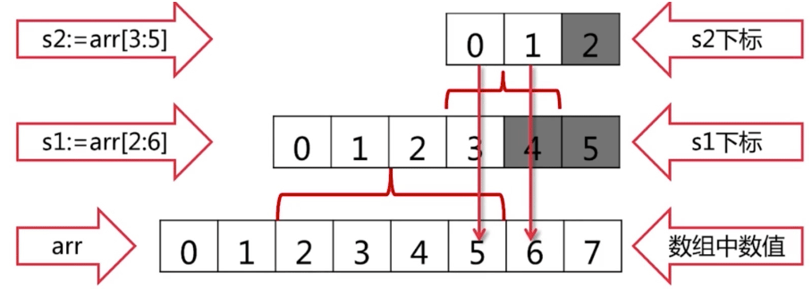

Go语言基础知识
- TAGS: Golang
基础4大件
比语言本身重要
- 数据结构和算法
数据结构：字符串、链表、二叉树、堆、栈、队列、哈希
算法：查找、排序、动态规划
刷leetcode题目
- 书籍 c/c++ 《大话数据结构》 java 《算法》 找工作 《剑指offer》
- 计算机网络
tcp/ip协议栈
- 书籍 《TCP/IP详解》
- 操作系统
进程、内存
- 书籍 《深入理解操作系统》
- 设计模式
- 23种设计模式 单例、工厂、代理、策略模式、模板方法
- 书籍 《大话设计模式》
c/c++学习路线参考： 造轮子语言，特点：性能好、粒度细、偏底层 后台开发比较多
语言本身学习
- c语言基础，最重要的指针和内存管理
书籍
- 《C Primer Plus》
- 进阶《C和指针》、《C专家编程》
- c++ 对c的扩充 面向对象特性、泛型、模板
基础4大件
数据结构和算、计算机网络、操作系统、设计模式
应用与编程实践
涉及到工具、编程环境、具体的编程实践
- linux操作系统学习 书籍：《鸟哥linux私房菜》 《linux就该这么学》
编译和调试工具 编译：
- 编译工具：gcc
- 编译动作make: makefile会写
调试：
- 调试工具：gdb
书籍：
- 官方gcc文档
- 《debugging with gdb》中文版
- 《跟我一起写makefile》 陈皓
linux环境编程
- linux系统编程
- 多线程编程
- 网络编程
书籍：《Uninx环境高级编程》、《Linux高性能服务器编程》、《POSIX多线程程序设计》
环境安装
go语言安装
- 官网：http://golang.org
- 国内下载：https://studygolang.com/dl
国内镜像：https://goproxy.cn go 1.13以上
go env -w GO111MODULE=on go env -w GOPROXY=https://goproxy.cn,direct
ide工具
- goland/Intellij Idea+go插件
- vscode
goland
最新版
- go mod的配置
新建项目
- 选"Go Modules(vgo)"
Location src/learngo GOROOT 安装位置 Proxy https://goproxy.cn,direct
- File Watcher和goimports的配置 插件：安装File Watche tools：选择 File Watcher点击“+”添加goimports，直接保存就好 这样保存文件时就会自动格式化文件
- 运行方式配置 一个包只包含一个main函数 如果运行不了，可以选择单文件运行，选择右上角三角“edit configrations” – “run kind”改成file
快捷键 配置成一样可以在多个 ide工具中使用 preferences–keymap搜索
删除一行 Delete line 回退 Navigate Back 前进 Navigate forward 跳转到定义 Navigate Declaration
基础语法
25个关键字
| 用途 | 关键字 |
|---|---|
| 程序声明 | import, package |
| 程序实体声明和定义 | chan, const, func, interface, map, struct, type, var |
| 程序流利控制 | go, select, break, case, continue, default, defer, else |
| fallthrough, for, goto, if, range, return, switch |
30个预定义名字
| 用途 | 预定义名字 |
|---|---|
| 内建常量 | true, false, iota, nil |
| 内建类型 | (u)int, (u)int8, (u)int16, (u)int32, (u)int64, uintptr |
| byte, rune | |
| float32, float64, complex64, complex128 | |
| 内建函数 | make, len, cap, new, append, copy, close, delete |
| complex, real, imag | |
| panic, recover |
变量、常量、类型
变量定义
使用var关键字
- `var a, b, c bool`
- `var s1, s2 string = "hello", "world"`
- 可放在函数内，或直接放在包内
- 使用var()集中定义变量
让编译器自动决定类型
- `var a, b, i, s1, s2 = true, false, 3, "hello", "world"`
使用 `:=` 定义变量
- `a, b, i, s1, s2 := true, false, 3, "hello", "world"`
- 只能在函数内使用
范例：变量的定义
package main import ( "fmt" ) //函数外定义变量 //外面定义时不用 := //作用域：包内部的变量 // var aa = 33 // var ss = "kkk" // var bb = true var ( aa = 33 ss = "kkk" bb = true ) func variableZeroValue() { var a int var s string fmt.Printf("%d, %q\n", a, s) } func variableInitialValue() { var a, b int = 3, 5 var s string = "abc" fmt.Println(a, b, s) } func variableTypeDeduction() { // 不规定类型可以写在一行自动判断 var a, b, c, s = 3, 5, true, "def" fmt.Println(a, b, c, s) } func variableShorter() { //使用 := 效果和上面是一样的，更加简单。只在第一次使用时用:= a, b, c, s := 3, 5, true, "def" fmt.Println(a, b, c, s) } func main() { fmt.Println("hh") variableZeroValue() variableInitialValue() variableTypeDeduction() variableShorter() fmt.Println(aa,ss,bb) } #执行 PS D:\project\goproject\src\test> go run main.go hh 0, "" 3 5 abc 3 5 true def 3 5 true def 33 kkk true
内建变量类型
- bool, string
- (u)int, (u)int8, (u)int16, (u)int32, (u)int64, uintptr 有u是无符号整数，没有u是有符号整数，uintptr 存储指针
- byte, rune 1字节长度的byte坑比较多，多用rune 32位
- float32, float64, complex64, complex128
验证欧拉公式
初中数学、高等数学
package main import ( "fmt" "math" "math/cmplx" ) // func euler() { // c := 3 + 4i // fmt.Println(cmplx.Abs(c)) // 5 // } func euler() { //fmt.Println(cmplx.Pow(math.E, 1i * math.Pi) + 1) //底数math.E，指数i * math.Pi 结果(0+1.2246467991473515e-16i) fmt.Printf("%.f\n", cmplx.Exp( 1i * math.Pi) + 1) //(0+0i) } func main() { euler() }
强制类型转换
- 类型转换是强制的。如下面求三角形边长
- `var a, b int = 3, 4`
- `var c int = math.Sqrt(a*a + b*b)` 错
- `var c int = int(math.Sqrt(float64(a*a + b*b)))`
常量和枚举
常量定义
- `const filename = "abc.txt"`
- const数值可作为各种类型使用
- `const a, b = 3 4` 不写类型，即可当int也可当float使用
- `var c int = int(math.Sqrt(a*a + b*b))`
使用常量定义枚举类型
- 普通枚举类型
- 自增枚举类型
范例
package main import ( "fmt" ) func consts() { const ( filename = "abc.txt" a, b = 3, 4 // 可以是int或float ) var c int = int(math.Sqrt(a*a + b*b)) fmt.Println(filename, c) // abc.txt 5 } func enums() { const ( cpp = iota _ //自增 python golang javascript ) // iota参与运算 const ( b = 1 << (10 * iota) //位移10*iota位 kb mb gb tb pb ) fmt.Println(cpp, javascript, python, golang) //0 4 2 3 fmt.Println(b, kb, mb, gb, tb, pb) //1 1024 1048576 1073741824 1099511627776 1125899906842624 } func main() { consts() enums() }
变量定义要点
- 变量类型写在变量后面，其它语言是反的
- 编译器可推测变量类型
- 没有char，只有rune且是32位的
- 原生支持复数类型
流程控制
条件语句-if-switch
选择结构if
- 结构1 if else
func bounded(v int) int { if v > 100 { return 100 } else if v < 0 { return 0 } else { return v } }- if条件里是不需要括号的
- 结构2 条件里赋值
if contents, err := ioutil.ReadFile(filename); err == nil { fmt.Println(string(contents)) } else { fmt.Println("cannot print file contenets:", err) }
- if的条件里可以赋值
- if的条件里赋值的变量作用域就在这个if语句里
范例：if条件里赋值
package main import ( "fmt" "io/ioutil") func main() { const filename = "abc.txt" if contents, err := ioutil.ReadFile(filename); err == nil { fmt.Println(string(contents)) } else { fmt.Println("cannot print file contenets:", err) } }
switch
- 结构1 有表达式
func eval(a, b int, op string) int { var result int switch op { case "+": result = a + b case "-": result = a - b case "*": result = a * b case "/": result = a / b default: panic("unsupported operator:" + op) } return result }- switch会自动break，除非使用fallthrough
- 结构2 switch后可以没有表达式
func grade(score int) string { g := "" switch { case score < 0 || score > 100: panic(fmt.Sprintf("Wrong score: %d", score)) case score < 60: g = "F" case score < 80: g = "C" case score < 90: g = "B" case score <= 100: g = "A" } return g }- switch后可以没有表达式
范例：switch后可以没有表达式
package main import ( "fmt" ) func grade(score int) string { g := "" switch { case score < 0 || score > 100: panic(fmt.Sprintf("Wrong score: %d", score)) case score < 60: g = "F" case score < 80: g = "C" case score < 90: g = "B" case score <= 100: g = "A" } return g } func main() { fmt.Println( grade(0), grade(59), grade(60), grade(82), grade(99), grade(100), //grade(101), ) }
循环语句-for-range
for
- 结构1 初始条件，结束条件，递增表达式
sum := 0 for i := 1; i <= 100; i++ { sum += i }- for条件里不需要括号
- for的条件里可以省略初始条件，结束条件，递增表达式
- 结构2 初始条件省略，结束条件，递增表达式
func convertToBin(n int) string { // 不断取模除2 result := "" for ; n > 0; n /= 2 { lsb := n % 2 // 取出最低位 result = strconv.Itoa(lsb) + result // 整数转字符串 } return result }- 省略初始条件，相当于while
范例：整数转2进制
package main import ( "fmt" "strconv" ) func convertToBin(n int) string { // 不断取模除2 result := "" for ; n > 0; n /= 2 { lsb := n % 2 // 取出最低位 result = strconv.Itoa(lsb) + result // 整数转字符串 } return result } func main() { fmt.Println( convertToBin(5), // 101 convertToBin(13), // 1011 --> 1101 ) }
- 结构3 初始条件、递增表达式省略，结束条件
for scanner.Scan() { fmt.Println(scanner.Text()) }- 省略初始条件，相当于while
范例：只有结束条件
package main import ( "bufio" "fmt" "os" ) // for省略递增条件 func printFile(filename string) { file, err := os.Open(filename) // 一行行读文件 if err != nil { panic(err) } scanner := bufio.NewScanner(file) for scanner.Scan() { fmt.Println(scanner.Text()) } } func main() { printFile("abc.txt") }
- 结构4 都省略掉
for { fmt.Println("abc") }
- 无限循环 很多并发编程都需要死循环，所以死循环表达方式如此简单
range
迭代 关键字 range会返回两个值，第一个返回值是元素的数组下标，第二个返回值是元素的值
package main import "fmt" func main() { str := "abc" //通过for打印每个字符 for i := 0; i < len(str); i++ { fmt.Printf("str[%d]=%c\n", i, str[i]) } //迭代打印每个元素，默认返回2个值; 一个是元素位置，一个是元素本身 for i, data := range str { fmt.Printf("str[%d] = %c\n", i, data) } for i := range str { //第2个返回值，默认丢弃，返回元素位置(下标) fmt.Printf("str[%d] = %c\n", i, str[i]) } for i, _ := range str { //第2个返回值，默认丢弃，返回元素位置(下标) fmt.Printf("str[%d] = %c\n", i, str[i]) } } 结果： str[0]=a str[1]=b str[2]=c str[0] = a str[1] = b str[2] = c str[0] = a str[1] = b str[2] = c str[0] = a str[1] = b str[2] = c
基本语法要点回顾
- for,if后面的条件没有括号
- if 条件里也可以定义变量
- 没有while
- switch不需要break，也可以直接switch多条件
函数
函数定义
func funcName(a, b int, op string) int {
//function body
}
函数名在前，类型在后
- 无参数和无返回值
- 有参数无返回值
- 普通参数列表
- 不定参数类型、传递
- 函数作为函数参数（函数调用）
- 无参数有返回值
- 函数可返回多个值
- 有参有返回值
有参数
同类型的参数可以用逗号合并，如`a int, b int == a, b int`
范例：
package main import "fmt" func eval(a, b int, op string) int { switch op { case "+": return a + b case "-": return a - b case "*": return a * b case "/": return a / b default: panic("unsupported operation:" + op) } } func main() { fmt.Println(eval(3, 4, "*")) }
函数可返回多个值
// 带余除法 13 / 3 = 4 ... 1
func div(a, b int) (int, int) {
return a / b, a % b
}
返回值起名字
func div(a, b int) (q, r int) {
q = a / b
r = a % b
return
}
- 函数返回多个值时，可以起名字；但仅用于非常简单的函数 避免函数长了找不到返回位置
- 是否起名字对于调用者没有区别
范例：多返回值起名字
func div(a, b int) (q, r int) { //q商，r余数
return a / b, a % b
}
func main() {
q, r := div(14, 3)
fmt.Println(q, r)
}
#还可以这样写
func div(a, b int) (q, r int) { //q商，r余数
q = a / b
r = a % b
return
}
#如果函数体比较长，不好找到哪行给q、r赋值，这种方法不太好，建议用上面的方法
忽略某返回值
使用下划线`_`
- `q, _ := div(14, 3)`
多返回值使用场景
- 用于err，调用者来具体处理err
范例：多返回值err场景
func eval(a, b int, op string) (int, error) {
switch op {
case "+":
return a + b, nil
case "-":
return a - b, nil
case "*":
return a * b, nil
case "/":
return a / b, nil
default:
return 0, fmt.Errorf("unsupported operation: %s", op)
}
}
函数作为函数参数
func apply(op func(int, int) int, a, b int) int {
fmt.Printf("Calling funciton %s with args"+
"(%d, %d)", runtime.FuncForPC(reflect.ValueOf(op).Pointer()).Name(),
a, b)
return op(a, b)
}
go语言是函数式编程的语言，函数是一等公民。 函数参数、函数体内都可以有函数。
范例：函数作为函数参数
func apply(op func(int, int) int, a, b int) int {
//利用反射确认op函数是调用哪个函数
p := reflect.ValueOf(op).Pointer() // 获得函数的指针
opName := runtime.FuncForPC(p).Name()
fmt.Printf("Calling funciton %s with args"+
"(%d, %d)\n", opName, a, b)
return op(a, b)
}
func pow(a, b int) int {
return int(math.Pow(float64(a), float64(b)))
}
func main() {
fmt.Println(apply(pow, 3, 4)) // 结果：Calling funciton main.pow with args(3, 4)81
}
//pow另外定义一个函数很吃力，这里直接写main里，写成匿名函数。即闭包
func main() {
fmt.Println(apply(
func(a int, b int) int {
return int(math.Pow(float64(a), float64(b)))
}, 3, 4)) // 结果：Calling funciton main.main.func1 with args(3, 4)81
}
可变参数列表
func sum(numbers ...int) int {
s := 0
for i := range numbers {
s += numbers[i]
}
return s
}
func main() {
fmt.Println(sum(1, 2, 3, 4, 5)) // 15
}
- 一定(只能)放在形参中的最后一个参数
- 传递的实参可以是0或多个
- 可变参数传递 `全部传递myfunc(args…) 部分值传递 myfunc2(args[2:]…) `
- 应用场景结构体中
函数语法要点回顾
- 返回值类型写在最后面
- 可以返回多个值
- 函数可作为参数
- 没有默认参数、可选参数
指针
var a int = 2
var pa *int = &a
*pa = 3
fmt.Println(a)
pa是一个对a的指针，c语言是`int*`代表指针，go语言是`*int`
- 操作符 "&" 取变量地址，"*"通过指针访问目标对象
- 不支持指针运算，不支持 "->"运算符，直接用"." 点来访问目标成员
参数传递
是值传递？还是引用传递？ c/c++即可值传递，又可以引用传递，java/python绝大部分是引用传递除了系统的自建类型以外
范例：c++中值传递和引用传递
void pass_by_val(int a) { //值传递
a++;
}
void pass_by_ref(int& a) { //引用传递
a++;
}
int main() {
int a = 3;
pass_by_val(a);
printf("After pass_by_val: %d\n", a);
pass_by_ref(a);
printf("After pass_by_ref: %d\n", a);
}
//结果
After pass_by_val: 3
After pass_by_ref: 4
值传递做了一份拷贝，原值不变 引用传递做了引用，调的值会被改变
go语言使用值传递？引用传递？
- go语言只有值传递一种方式，但有指针来做配合
值传递-普通变量做函数参数
变量复制一份
范例： 值传递-普通变量做函数参数
var a int func f(a int) a -- a a变量拷贝一份给f函数，原a变量值不被改变
引用传递-指针做函数参数
指针传递做了引用传递的效果
范例：引用传递-指针做函数参
var a int
func f(pa *int)
&a -- pa
|
a
a做一个地址&a传递给f函数，&a和pa同时指向变量a，如果在f函数中修改
pa指向的内容，那么a的值也会变。
对象-传递
可以值传递，也可以指针传递。用哪种方式传递，在后面对象封装时，讲述如何把cache封装值类型或指针类型
范例：cache做为值传递类型
var cache Cache
func f(cache Cache)
cache对象的结构，一般不带有data，通常是指向data的指针pData
cahe(pDdata) --- cahe(pData)
|
data
拷贝了一份cache给f函数，同样有一份pData指针，这俩个pData都指向同一个data
如果cache中同时维护了一些状态，就不能做为值传递类型，这时就传cache指针过去。
范例：交换2个变量的值
func swap(a, b *int) {
*a, *b = *b, *a
}
func main() {
a, b := 3, 4
swap(&a, &b)
fmt.Println(a, b) //4 3
}
swap函数中a,b做为指针，b指向的内容被换成a，a指向的内容被换成b，这样就完成了交换。 不过还有一种做法
在编程中更佳希望的是不可变量，`swap(&a, &b)`把指针取地址传进去看上去不太舒服，可以这样做
func swap(a, b int) (int, int) {
return b, a // 把交换的结果返回出去
}
func main() {
a, b := 3, 4
a, b = swap(a, b) // a, b 去接函数的返回值
fmt.Println(a, b) // 4 3
}
swap函数把交换的结果返回出去`return b, a`，调用swap函数可以a,b来接住他们`a, b = swap(a, b)` 上面这种swap的定义方法才是更好的。
内建容器
基础语法可以写一些简单的代码片段，如10进制数转2进制数。 这里讲述复杂的数据结构，包括数组、切片、容器介绍
package main
func main() {
cache := make(map[string]string)
cache["name"] = "abc"
}
数组
{}*** 数组定义
var arr1 [5]int
arr2 := [3]int{1, 3, 5}
arr3 := [...]int{2, 4, 6, 8, 10} // 编译器数有几个int
var grid [4][5]int // 4行5列数组
- 数量写在类型前面
- `…`是让编译器来数有几个该数据
- 多维数组`[]`方括号写在前面。如，`[4][5]int`代表4个长度为5的int
遍历数组-for-range
for
arr3 := [...]int{2, 4, 6, 8, 10} // 定义数组
for i :=0; i < len(arr3); i++ { // 遍历数组
fmt.Println(arr3[i])
}
一般遍历数组使用range关键字
range
arr3 := [...]int{2, 4, 6, 8, 10}
for i := range arr3 { // 只要下标
fmt.Println(arr3[i])
}
for i, v := range arr3 { // i为数组下标， v为下标对应的值
fmt.Println(i, v)
}
for _, v := range arr3 { // 只要值, _代表忽略
fmt.Println(v)
}
- 可通过`_`下划线来省略变量
- 不仅range，任何地方都可通过`_`来省略变量
- 只要i，可写成 `for i := range numbers`
范例：取数组中最大的值
arr3 := [...]int{2, 4, 6, 8, 10} // 编译器数有几个int
maxi := -1
maxValue := -1
for i, v := range arr3 {
if v > maxValue {
maxi, maxValue = i ,v
}
}
fmt.Println(maxi, maxValue)
范例：数组中数据求和
sum := 0
for _, v := range numbers {
sum += v
}
为什么要用range
- 意义明确，美观
- c++ 没有类似能力
- java/python: 只能for each value, 不能同时获取i, v
数组是值类型
func printArray(arr [5]int) {
arr[0] = 100
}
func printArrayPtr(arr *[5]int) {
arr[0] = 100 // 可以不用写(*arr)
}
func main() {
// 定义数组
var arr1 [5]int
arr2 := [3]int{1, 3, 5}
arr3 := [...]int{2, 4, 6, 8, 10} // 编译器数有几个int
var grid [4][5]int // 4行5列数组
printArray(arr1)
printArray(arr3)
// printArray(arr2) //报错 arr2和[5]int是不同的类型
// 数组指针的方法
printArrayPtr(&arr1)
printArrayPtr(&arr3)
fmt.Println("arr1, arr3")
fmt.Println(arr1, arr3) // [100 0 0 0 0] [100 4 6 8 10]
}
- `[10]int`和`[20]int`是不同类型
- 调用`func f(arr [10]int)`会 拷贝 数组
- 在go语言中一般不直接使用数组，而是用切片。
Slice 切片
arr := [...]int{0, 1, 2, 3, 4, 5, 6, 7}
s := arr[2:6]
s[0] = 100
- s就是数组arr的切片，值为`[2 3 4 5]`
- `[2:6]`半开半闭区间，2是包含进去的，6是不包括进去的
- slice本身是没有数据的，是对底层数组的一个view视图。
- arr值变为`[0 1 10 3 4 5 6 7]`
范例：验证slice是对数组的view视图
func updateSlice(s []int) {
s[0] = 100
}
func main() {
arr := [...]int{0, 1, 2, 3, 4, 5, 6, 7}
s1 := arr[2:]
fmt.Println("s1 =", s1) // s1 = [2 3 4 5 6 7]
s2 := arr[:]
fmt.Println("s2 =", s2) // s2 = [0 1 2 3 4 5 6 7]
fmt.Println("After updateSlice(s1)")
updateSlice(s1)
fmt.Println(s1) // [100 3 4 5 6 7]
fmt.Println(arr) //[0 1 100 3 4 5 6 7]
fmt.Println("After updateSlice(s2)")
updateSlice(s2)
fmt.Println(s2) // [100 1 100 3 4 5 6 7]
fmt.Println(arr) // [100 1 100 3 4 5 6 7]
}
数组范例中，使用slice来实现
#在go语言中一般不直接使用数组，而是用切片 printArrayPtr(&arr1) 可改成 printArrayPtr(arr1[:]) printArrayPtr(arr *[5]int) 可改成 printArrayPtr(arr *[5]int)
reslice切片再切片
s := arr[2:6] s = s[:3] s = s[1:] s = arr[:]
Slice的扩展
arr := [...]int{0, 1, 2, 3, 4, 5, 6, 7}
s1 := arr[2:6]
s2 := s1[3:5]
- s1的值为？ s2的值为？
- `s1 = [2 3 4 5] s2 = [5 6]`

- 底层的数组arr是0, 1, 2, 3, 4, 5, 6, 7
- 操作s1 := arr[2:6]后，取到2, 3, 4, 5。映射到s1的下标就是0, 1, 2, 3。s1里因为是对底层arr的view，下标不是到3就结束了，到以后会打印4, 5，但直接用s1[4], s1[5]是看不见的，但它还是知道s1下面有下标4, 5两个元素的。
- 操作s2 := s1[3:5]后，就取了s1下标3和4的值5，6。
Slice的实现

- slice底层有个array，array像上面这样涂成了3种颜色
- slice中有ptr指向slice开头的元素
- slice中有len说明slice的长度，当取下标大于等于len的值时就报错，下标越界
- slice中有cap(capacity)说明下面整个array从ptr开始到结束整个的长度
- slice实现其实就有这3个ptr,len,cap变量就能区别于array，扩展时只要不超过capacity就好
arr := [...]int{0, 1, 2, 3, 4, 5, 6, 7}
s1 := arr[2:6]
s2 := s1[3:5]
- slice可以向后扩展，不可以向前扩展
- `s[i]`不可以超越`len(s)`，向后扩展不可以超越底层数组`cap(s)`
向Slice添加元素
arr := [...]int{0, 1, 2, 3, 4, 5, 6, 7}
s1 := arr[2:6]
s2 := s1[3:5]
s3 := append(s2, 10)
s4 := append(s3, 11)
s5 := append(s4, 12)
- s3, s4, s5的值为？arr的值为？
- `s3, s4, s5= [5 6 10] [5 6 10 11] [5 6 10 11 12]`
- `arr = [0 1 2 3 4 5 6 10]`
- 添加元素时如果超越cap，系统会重新分配更大的底层数组
- 如果原来的arr有人用就还在，如果没人用就会被垃圾回收掉
- 由于值传递的关系，必须接收append的返回值
package main import "fmt" func updateSlice(s []int) { s[0] = 100 } func main() { arr := [...]int{0, 1, 2, 3, 4, 5, 6, 7} fmt.Println("arr[2:6] =", arr[2:6]) // arr[2:6] = [2 3 4 5] fmt.Println("arr[:6] =", arr[:6]) // arr[:6] = [0 1 2 3 4 5] s1 := arr[2:] fmt.Println("s1 =", s1) // arr[2:] = [2 3 4 5 6 7] s2 := arr[:] fmt.Println("s2 =", s2) // arr[:] = [0 1 2 3 4 5 6 7] //验证slice是底层array的一个视图 fmt.Println("After updateSlice(s1)") updateSlice(s1) fmt.Println(s1) // [100 3 4 5 6 7] fmt.Println(arr) //[0 1 100 3 4 5 6 7] fmt.Println("After updateSlice(s2)") updateSlice(s2) fmt.Println(s2) // [100 1 100 3 4 5 6 7] fmt.Println(arr) // [100 1 100 3 4 5 6 7] fmt.Println("Reslice") fmt.Println(s2) // [100 1 100 3 4 5 6 7] s2 = s2[:5] fmt.Println(s2) // [100 1 100 3 4] s2 = s2[2:] fmt.Println(s2) // [100 3 4] s2 = arr[:] fmt.Println(s2) // [100 1 100 3 4 5 6 7] fmt.Println("Extending slice") arr[0], arr[2] = 0, 2 s1 = arr[2:6] // [2 3 4 5] s2 = s1[3:5] // 取的是[s1[3], s1[4]] ，可s1[4]不在s1里面，直接取s1[4]是取不出的 fmt.Println("arr =", arr) // arr = [0 1 2 3 4 5 6 7] fmt.Printf("s1=%v, len(s1)=%d, cap(s1)=%d\n", s1, len(s1), cap(s1)) // s1=[2 3 4 5], len(s1)=4, cap(s1)=6 fmt.Printf("s2=%v, len(s2)=%d, cap(s2)=%d\n", s2, len(s2), cap(s2)) // s2=[5 6], len(s2)=2, cap(s2)=3 // 向Slice添加元素 s3 := append(s2, 10) s4 := append(s3, 11) s5 := append(s4, 12) fmt.Println("s3, s4, s5=", s3, s4, s5) // s3, s4, s5= [5 6 10] [5 6 10 11] [5 6 10 11 12] // s4 and s5 no longer view arr fmt.Println("arr =", arr) // arr = [0 1 2 3 4 5 6 10] // s4, s5是新的array，把arr拷贝过去，新arr长度会设置的更长些 }
slice的其它操作
创建slice
var s []int // Zero value for slice is nil，可以被append
s1 := []int{2, 4, 6, 8}
s2 := make([]int, 16) // 长度16的slice, 容量也为16
s3 := make([]int, 10, 32) // 长度16的slice，容量32
范例：创建slice
package main import "fmt" func printSlice(s []int) { fmt.Printf("len=%d, cap=%d\n", len(s), cap(s)) } func main() { fmt.Println("Creating slice") // 一般array不用定义，直接创建slice var s []int // Zero value for slice is nil，可以被append for i := 0; i < 100; i++ { printSlice(s) s = append(s, 2*i+1) } fmt.Println(s) // 其它创建slice方法 s1 := []int{2, 4, 6, 8} fmt.Println(s1) // [2 4 6 8] s2 := make([]int, 16) // 长度16的slice s3 := make([]int, 10, 32) // 长度16的slice，容量32 fmt.Printf("%v, len=%d, cap=%d\n", s2, len(s2), cap(s2)) // [0 0 0 0 0 0 0 0 0 0 0 0 0 0 0 0], len=16, cap=16 fmt.Printf("%v, len=%d, cap=%d\n", s3, len(s3), cap(s3)) //[0 0 0 0 0 0 0 0 0 0], len=10, cap=32 } len=0, cap=0 len=1, cap=1 len=2, cap=2 len=3, cap=4 len=4, cap=4 len=5, cap=8 len=6, cap=8 len=7, cap=8 len=8, cap=8 len=9, cap=16 ... len=16, cap=16 len=17, cap=32 ... len=32, cap=32 len=33, cap=64 ... len=64, cap=64 len=65, cap=128 ... len=99, cap=128
内建copy函数
copy(dstSlice, srcSlice)
函数copy 在两个 slice 间复制数据，复制长度以 len 小为准备， 两个slice 可指向同一底层数组。 将 srcslice 复制到 dstslice
范例：内建copy函数
fmt.Println("Copying slice") // s1 := []int{2, 4, 6, 8} // s2 := make([]int, 16) copy(s2, s1) fmt.Println(s2) // [2 4 6 8 0 0 0 0 0 0 0 0 0 0 0 0]
切片元素删除
fmt.Println("Deleting elements from slice") // 系统没有内建函数 // 删除中间的元素 s2 = append(s2[:3], s2[4:]...) // 可变参数用s2[4:]... 或1,2,3,4 fmt.Println(s2) // [2 4 6 0 0 0 0 0 0 0 0 0 0 0 0] len=15, cap=16 fmt.Println("Popping from front/back") // s2 := [2 4 6 0 0 0 0 0 0 0 0 0 0 0 0] len=15, cap=16 // 删除头尾的元素 front := s2[0] s2 = s2[1:] tail := s2[len(s2) - 1] s2 = s2[:len(s2) - 1] fmt.Println(front, tail) // 2, 0 fmt.Println(s2) // [4 6 0 0 0 0 0 0 0 0 0 0 0]
切片去重
func RemoveRep(s []int) []int {
start := time.Now()
result := []int{}
m := make(map[int]bool) //map的值不重要
for _, v := range s {
if _, ok := m[v]; !ok {
result = append(result, v)
m[v] = true
}
}
fmt.Println("花费时间:", fmt.Sprintf("%vms", (time.Now().UnixNano()-start.UnixNano())/1e+6))
return result
}
map
map定义
m := map[string]string {
"name": "abc",
"course": "golang",
}
- `map[K]V, map[K1]map[K2]V` 普通map和复合map，其中`map[K1]`的值为`map[K2]V`
map的操作
- 创建：`make(map[string]int)`
- 获取元素：`m[key]`
- key不存在时，获得Value类型的初始值
- 用`value, ok := m[key]`来判断是否存在key
- 用内建delete函数删除一个key
范例：map操作
func main() {
m := map[string]string{
"name": "abc",
"course": "golang",
}
m2 := make(map[string]int) // m2 == empty map
var m3 map[string]int // m3 == nil
fmt.Println(m, m2, m3) // map[course:golang name:abc] map[] map[]
// m3 == nil, m2 == empty map go语言的nil是可以参与运算的
fmt.Println("Getting values")
courseName:= m["course"]
fmt.Println(courseName)
sssName, ok := m["sss"]
fmt.Println(sssName, ok) // key不存在时返回空串，zero value, 判断key是否存在，返回false,true
if sssName, ok := m["sss"]; ok {
fmt.Println(sssName, ok)
} else {
fmt.Println("Key does not exist") // Key does not exist
}
fmt.Println("Deleting values")
name, ok := m["name"]
fmt.Println(name, ok) // abc true
delete(m, "name")
name, ok = m["name"]
fmt.Println(name, ok) // false
}
map的遍历
fmt.Println("Traversing map") for k, v := range m { // for k:= range m { 还可以 for _, v := range m { fmt.Println(k, v) } //key在map中是无序的
- 使用range遍历key，或者遍历key，value对
- 不保证遍历顺序，如需顺序，需要手动对key排序，key加到slice对slice排序
- 使用len获得元素个数
map的key
什么类型能做为map的key？
- map使用哈希表，必须可以比较相等
- 除了slice, map, function的内建类型都可以作为key
- struct类型不包含上述字段，也可作为key
map的用途非常广泛，下面举一个复杂的示例
范例：寻找最长不含有重复字符的子串长度(leetcode)
https://leetcode-cn.com/problems/longest-substring-without-repeating-characters/description/
- abcabcbb -> abc 3
- bbbb -> b 1
- pwwkew -> wke 3
一个字符串，假设从左向右扫描一遍就可以了，这时假设扫描到x位置，看到一个字母x。
- 先记录一个start，表示当前找到的最长不含有重复字符的子串的开始，当前有效答案的开始 至少能保证start到x之前的子串是不含有重复字符的
- 看到x，就要去看从start到x-1位置之间有没有x
- 记录`lastoccurred[x]`表示x最后出现的位置，最后出现的位置我们问map，它会有2种情况
- `lastOccurred[x]`不存在在，或者出现在`start`之前，那么就无需操作
- `lastOccurred[x]`出现在start和x中间，就不能做为最长子串了，就更新start，把start指向`lastOccurred[x] + 1`的位置
- 记录`lastoccurred[x]`表示x最后出现的位置，最后出现的位置我们问map，它会有2种情况
思路：对于每个字母x
- `lastOccurred[x]`不存在，或者小于`< start`无需操作
- `lastoccurred[x] >= start`，则更新start, start指向到`lastoccurred[x] + 1`的位置
- 更新`lastoccurred[x]`，更新`maxLength`
package main import "fmt" func lengthOfNonRepeatingSubStr(s string) int { lastOccurred := make(map[byte]int) // 每个字母最后出现的位置 start := 0 // 当前找到的最长不含有字符的子串开始 maxLength := 0 // 重复子串的最大长度 // 遍历字符串 for i, ch := range []byte(s) { if lastI, ok := lastOccurred[ch]; ok && lastI >= start { // lastOccurred[ch]可能是不存在的它的值是0，0参与下面的运算是不对的 start = lastOccurred[ch] + 1 } if i-start+1 > maxLength { // 更新maxLength maxLength = i - start + 1 } lastOccurred[ch] = i } return maxLength } func main() { fmt.Println( lengthOfNonRepeatingSubStr("abcabcbb")) // 3 fmt.Println( lengthOfNonRepeatingSubStr("bbbb")) // 1 }
对于汉字，用rune
字符串
rune相当于go的char
go语言处理中文的关键就在于理解rune类型。rune相当于go的char
如何利用rune
package main import ( "fmt" "unicode/utf8" ) func main() { s := "Yes我爱互联网" // UTF-8 可变长编码 fmt.Println(len(s), s) // 字符串长度 18 // 查看s原始字节，看是如何存储的 fmt.Printf("%X\n", []byte(s)) // 596573E68891E788B1E4BA92E88194E7BD91 for _, b := range []byte(s) { fmt.Printf("%X ", b) // 我是UTF-8编码 E6 88 91 } fmt.Println() // 可以看到每个中文占3个字节，英文字母占1个字节，这是UTF-8 可变长编码 for i, ch := range s { // ch is a rune 。 fmt.Printf("(%d %X) ", i, ch) // unicode编码，我是4个字节 (3 6211)，只有后面2个字节是有字的 } fmt.Println() // 将string做utf-8的解码，解出来每一个字符转unicode，再将unicode放到rune类型中 // 利用utf-8库帮助理解string fmt.Println("Rune count:", utf8.RuneCountInString(s)) // Rune count: 8 bytes := []byte(s) // 拿到s的字节 for len(bytes) > 0 { ch, size := utf8.DecodeRune(bytes) // 拿到字符和长度 函数解码p开始位置的第一个utf-8编码的码值，返回该码值和编码的字节数。 bytes = bytes[size:] fmt.Printf("%c ", ch) } fmt.Println() for i, ch := range []rune(s) { // 转成rune的silce就能获取对应中文下标值 fmt.Printf("(%d %c) ", i, ch) } } # 输出 PS D:\project\goproject\src\test> go run .\strings.go 18 Yes我爱互联网 596573E68891E788B1E4BA92E88194E7BD91 59 65 73 E6 88 91 E7 88 B1 E4 BA 92 E8 81 94 E7 BD 91 (0 59) (1 65) (2 73) (3 6211) (6 7231) (9 4E92) (12 8054) (15 7F51) Rune count: 8 Y e s 我 爱 互 联 网 (0 Y) (1 e) (2 s) (3 我) (4 爱) (5 互) (6 联) (7 网)
- 使用range遍历pos，rune对 下标值英文是连续的，中文下标值每次都加3，加3的值对我们用处不大
- 使用utf8.RunecountInString获得字符数量
- 使用len只能获得字节数
- 使用`[]byte`获得字节
其他字符操作
- Filds, Split, Join Filds认空格的，Split按分割符分割，Join把slice字符串拼接
- Contains, Index Contains判断是否包含子串，Index查找子串所在字符位置
- Repeat, Replace 重复，替换
- ToLower, ToUpper
- Trim, TrimRight, TrimLeft Trim首尾去除字符
面向对象
type TreeNode struct { Left, Right *TreeNode Value int } func (root *TreeNode) traverse() { if root == nil { return } root.Left.traverse() fmt.Print(root.Value) root.Right.traverse() }
使用面向对象，我们能够从代码片段做出一些更佳大的系统来，面向对象能做出这些大型系统的零部件。 比如上面TreeNode就是一个零部分，还给TreeNode定义了一个travese方法。
- go语言仅支持封装，不支持继承和多态 在c/c++中继承和多态理解起来都比较麻烦，用起来也有限制，go语言设计者看到了这些，继承和多态用接口来做，面向接口编程
- go语言没有class，只有struct
结构体和方法
结构的定义
type TreeNode struct {
Left, Right *TreeNode
value int
}
结构体的创建
root := treeNode{value: 3}
root.Left = &treeNode{}
root.Right = &treeNode{nil, nil, 5}
root.Right.Left = new(treeNode)
不论地址还是结构本身，一律使用"."来访问成员 go语言提供了以上多种创建方法不需要有构造函数的方法。如果要控制其构造可以加“工厂函数” “工厂函数”就是一些普通的函数
func creatNode(value int) *TreeNode { return &TreeNode{value: value} // 局部变量也会返回给别人用的。如在c++中就不行 } root.Left.Right = creatNode(2) // 利用自定义工厂函数构造结构- 使用自定义工厂函数
- 注意返回了局部变量的地址
范例：结构的创建
package main import "fmt" type treeNode struct { value int left, right *treeNode } func creatNode(value int) *treeNode { return &treeNode{value: value} } func main() { // 结构体的创建 var root treeNode //{0 <nil> <nil>} root = treeNode{value: 3} root.left = &treeNode{} root.right = &treeNode{5, nil, nil} root.right.left = new(treeNode) // root.right后也可以用"."点号， root.left.right = creatNode(2) // 利用自定义工厂函数构造结构 nodes := []treeNode { // 在slice中可以省略treeNode字写法 {value: 3}, {}, {6, nil, &root}, } fmt.Println(nodes) // [{3 <nil> <nil>} {0 <nil> <nil>} {6 <nil> 0xc000004078}] }
结构创建在堆上还是栈上？
像c++局部变量是分布在栈上的，函数退出局部变量就会被立即销毁，如果要传出去必须在堆上分配，堆上分配必须手动释放。 像java几乎所有都分配在堆上的，必须有垃圾回收机制
go语言结构创建在堆上还是栈上？
- 不需要知道 编译器自动判断
为结构定义方法
有个接收者
func (node TreeNode) print() {
fmt.Print(node.value)
}
- 显示定义和命令名方法接收者 函数前面“()”括号是接收者，接收者的类型和名字都是显示定义的
使用指针作为方法的接收者
func (node *TreeNode) setValue(value int) {
node.Value = value
}
- 只有使用指针才可以改变结构内容
- nil指针也可以调用方法
#结构体是nil指针也可以调用方法 type treeNode struct { value int left, right *treeNode } func (node treeNode) print() { fmt.Print(node.value, " ") } func (node *treeNode) setValue(value int) { if node == nil { fmt.Println("Setting value to nil node. Ignored.") return // 如果node是nil指针，拿内部值是拿不到的，会报错，所以要return返回 } node.value = value } func main() { var pRoot *treeNode pRoot.setValue(200) // 结构体是nil指针也可以调用方法 pRoot = &root pRoot.setValue(300) pRoot.print() }
范例：为结构定义方法
package main import "fmt" type treeNode struct { value int left, right *treeNode } // 定义结构的方法 func (node treeNode) print() { //值传递 在函数前面添加了(node treeNode)接收者，和print(node treeNode)相当 fmt.Print(node.value, " ") } func (node *treeNode) setValue(value int) { // 引用传递 node.value = value } func creatNode(value int) *treeNode { return &treeNode{value: value} } func main() { // 结构体的创建 var root treeNode //{0 <nil> <nil>} root = treeNode{value: 3} root.left = &treeNode{} root.right = &treeNode{5, nil, nil} root.right.left = new(treeNode) // root.right后也可以用"."点号， root.left.right = creatNode(2) // 利用自定义工厂函数构造结构 // 结构方法的使用 root.print() // 3 其中print是个函数，它不是无参的，它有个接收者root root.right.left.setValue(4) // setValue函数会把接收者root.right.left的地址做参数传递过去 root.right.left.print() // print函数会把接收者root.right.left解析出来拷贝一份做参数传递过去 fmt.Println() root.print() // 值传递 root.setValue(100) // 引用传递，指针引用 pRoot := &root pRoot.print() pRoot.setValue(200) pRoot.print() }
范例：遍历树
func (node *treeNode) traverse() { if node == nil { // 判断 空树 的情况 return } node.left.traverse() //先遍历左子树 使用traverse函数将接收者node.left做为参数传递过去 node.print() node.right.traverse() // 遍历右子树 } root.traverse()
值接收者 vs 指针接收者的选择
- 要改变内容必须使用指针接收者 值接收者只是个拷贝
- 结构过大也考虑使用指针接收者 (性能问题)
- 一致性：如果有指针接收者，最好都是指针接收者（建议，这样看起来简单些，不混乱）
和其它语言比怎样？
- 值接收者 是go语言特有 指针接收者其它语言都有，c++ dec指针，python的self
- 值/指针接收者均可接收值/指针
包和封装
定义完方法后，我们得看看怎么将这些方法封装
封装
方法有些可见有些可见，有些不可见，如何实现
- 名字一般使用CamelCase go语言是通过函数的命名来做的，一般使用CamelCase，而不使用全小写的"_"下划线形式
- 首字母大写：public 公用
- 首字母小写：private 私有
public/private是针对包来说的
包
还记得每个程序上方都要写`package main`，这就是包。包远远不只main，main只是个入口 真正的代码都要写在各自的包里面。
包是如何分的？
- 每个目录一个包 包名不一定和目录名一样，但每个目录只能有一个包
- main包包含可执行入口 里面有一个main函数
- 为结构定义的方法必须放在同一个包内，但可以是不同的文件
范例：包的使用
└─tree
│ traversal.go // tree包，需要外部引用的方法、变量就大写
│ tree.go // tree包
│
└─entry // main包目录
entry.go // 引用tree包函数，引用tree.TreeNode不用重复包名，结构体可改为Node，tree.Node引用就好
# entry.go内容
package main
import "test/tree"
func main() {
// 结构体的创建
var root tree.Node //{0 <nil> <nil>}
root = tree.Node{Value: 3}
root.Left = &tree.Node{}
root.Right = &tree.Node{5, nil, nil}
root.Right.Left = new(tree.Node) // root.right后也可以用"."点号，
root.Left.Right = tree.CreatNode(2) // 利用自定义工厂函数构造结构
// 结构方法的使用
root.Print() // 3 其中print是个函数，它不是无参的，它有个接收者root
root.Right.Left.SetValue(4) // setValue函数会把接收者root.right.left的地址做参数传递过去
root.Traverse()
}
扩展已有类型
如何扩充系统类型或者别人的类型 有2种方法
- 定义别名
- 使用组合
定义别名
范例：实现一个队列
package queue type Queue []int // 定义别名，扩展已有类型 func (q *Queue) Push(v int) { *q = append(*q, v) } func (q *Queue) Pop() int { head := (*q)[0] *q = (*q)[1:] return head } func (q *Queue) IsEmpty() bool { return len(*q) == 0 } #main包 func main() { q := queue.Queue{1} q.Push(2) q.Push(3) fmt.Println(q.Pop()) fmt.Println(q.Pop()) fmt.Println(q.IsEmpty()) fmt.Println(q.Pop()) fmt.Println(q.IsEmpty()) }
使用组合
import ( "fmt" "test/tree" ) type myTreeNode struct { // 采用组合方式，扩展已有类型 node *tree.Node } // 定义一个后续遍历的函数 func (myNode *myTreeNode) postOrder() { if myNode == nil || myNode.node == nil { return } left := myTreeNode{myNode.node.Left} right := myTreeNode{myNode.node.Right} left.postOrder() right.postOrder() myNode.node.Print() } myRoot := myTreeNode{&root}
使用内嵌来扩展已有类型
使用embedding(内嵌)方式扩展已有类型
范例：
package main import ( "fmt" "test/tree" ) type myTreeNode struct { // node *tree.Node *tree.Node // Embedding 内嵌类型，可以把node字段省掉。好处是这个是个语法堂能省下代码量，看起来简洁些 // 默认的名字是tree.后面点出的东西。这里是Node // 相当于把tree.Node的成员变量全都拉出来，铺在myTreeNode的结构里。 // 里面的变量和方法都能直接"."点出来使用 } func (myNode *myTreeNode) postOrder() { if myNode == nil || myNode.Node == nil { return } left := myTreeNode{myNode.Left} right := myTreeNode{myNode.Right} left.postOrder() right.postOrder() myNode.Print() } // 重载函数 func (myNode *myTreeNode) Traverse() { fmt.Println("This method is shadowed") } func main() { root := myTreeNode{&tree.Node{Value: 3}} // 直接把tree.Node中的变量和方法都能拉上来 root.Left = &tree.Node{} root.Right = &tree.Node{5, nil, nil} root.Right.Left = new(tree.Node) root.Left.Right = tree.CreatNode(2) root.Right.Left.SetValue(4) fmt.Print("In-order traversal: ") root.Traverse() // 重载了函数 root.Node.Traverse() // 使用原始遍历 fmt.Print("\nMy own post-order traversal: ") root.postOrder() fmt.Println() //子类赋值给基类是通过接口实现的，不是通过类的继承来实现的 var baseRoot *tree.Node baseRoot := &root // 报错 }
小结
如何扩充系统类型或者别人的类型
- 定义别名：最简单 再转成使用组合就要改很多代码，不能从别名到组合做无缝转换
- 使用组合：最常用
- 使用内嵌：需要省下许多代码时，考虑使用 是个语法堂能省下代码量，看起来简洁些。 写代码熟练的人比较能看懂，新手看没那么直观
项目管理
依赖管理
- 依赖的概念
- 依赖管理经历的三个阶段 GOPATH, GOVENDOR, go mod
GOPATH和GOVENDOR
GOPATH
- 默认在`~/go(unix, linux), %USERPROFILE%\go(windows)`
所有项目都放在GOPATH/src下，自己的项目第三方依赖都在这里，会导致项目非常大
范例：使用GOPATH管理依赖
export GO111MODULE=off export GOPATH=~/tmp/goproject
项目依赖会从GOROOT，GOPATH中找
GOVENDOR
- 每个项目有自己的vendor目录，存放第三方库
- 大量第三方依赖管理工具：glide, dep, go dep, …
范例：使用GOPATH管理依赖，并在项目目录中创建vendor目录，存放不同版本的依赖
export GO111MODULE=off export GOPATH=~/tmp/goproject
项目依赖会从GOROOT，GOPATH，vendor tree中找
go mod的使用
go 11版本加入了go mod
- 由go命令统一管理，用户不必关心目录结构
- 初始化`go mod init [name]`
- 增加依赖：`go get` 或者在代码文件中写`import "依赖地址"`
- 更新依赖：`go get [@v…], go mod tidy`
- 升级到最新：`go get -u`
- 将旧项目迁移到go mod：`go mod init, go build ./…`
go mod 命令
go mod download : 下载依赖包到本地（默认为 GOPATH/pkg/mod 目录） go mod edit : 编辑 go.mod 文件 go mod graph : 打印模块依赖图 go mod init : 初始化当前文件夹，创建 go.mod 文件 go mod tidy : 增加缺少的包，删除无用的包 go mod vendor : 将依赖复制到 vendor 目录下 go mod verify : 校验依赖 go mod why : 解释为什么需要依赖 go clean -modcache : 清除所有mod及缓存
目录的整理
包使用原则
- 每个main函数都在单独的目录中